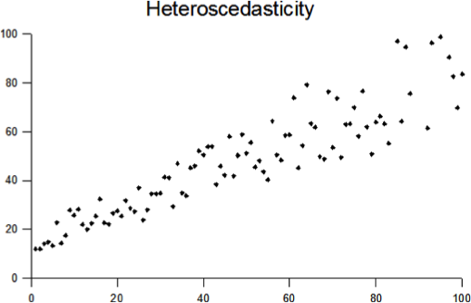
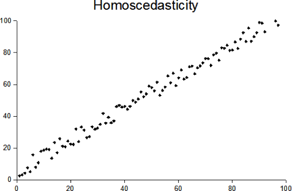

Regression in Stata
Table of Contents
- 1. Introduction
- 2. Univariate regression
- 2.1. Univariate Regression: Preliminaries
- 2.2. Univariate Regression Preliminaries
- 2.3. Univariate Regression Preliminaries
- 2.4. Univariate Regression Preliminaries
- 2.5. Univariate Regression: SAT scores and Education Expenditures
- 2.6. Linear Regression Assumptions
- 2.7. Homoscedasticity
- 2.8. Testing Assumptions: Normality
- 2.9. Testing Assumptions: Homoscedasticity
- 3. Multiple regression
- 4. Interactions
- 5. Exporting and saving results
- 6. Wrap-up
1 Introduction
1.1 Download workshop materials setup
- Download materials from http://j.mp/stata-stats
- Extract materials from the
StataStatistics.zipfile - Launch Stata and open the
StataStatistics.dofile
1.2 Organization
- Please feel free to ask questions at any point if they are relevant to the current topic (or if you are lost!)
- There will be a Q&A after class for more specific, personalized questions
- Collaboration with your neighbors is encouraged
- If you are using a laptop, you will need to adjust paths accordingly
- Make comments in your Do-file rather than on hand-outs
- Save on flash drive or email to yourself
1.3 Today's Dataset
- We have data on a variety of variables for all 50 states
- Population, density, energy use, voting tendencies, graduation rates, income, etc.
- We're going to be predicting SAT scores
- Univariate Regression: SAT scores and Education Expenditures
- Does the amount of money spent on education affect the mean SAT score in a state?
- Dependent variable: csat
- Independent variable: expense
1.4 Opening Files in Stata
- Look at bottom left hand corner of Stata screen
- This is the directory Stata is currently reading from
- Files are located in the StataStatistics folder on the Desktop
- Start by telling Stata where to look for these
* change directory cd "~/StataStatistics"
- Use dir to see what is in the directory:
dir
-rw-r--r-- 1 izahn staff 3935 Jan 23 18:05 Regression in Stata.do -rw-r--r-- 1 izahn staff 7816 Apr 5 17:14 StataStatistics.txt -rw-r--r-- 1 izahn staff 13630 Jan 23 18:03 states.dta
- Load the data
* use the states data set use states.dta
1.5 Steps for Running Regression
- Examine descriptive statistics
- Look at relationship graphically and test correlation(s)
- Run and interpret regression
- Test regression assumptions
2 Univariate regression
2.1 Univariate Regression: Preliminaries
- We want to predict csat scores from expense
- First, let's look at some descriptives
* generate summary statistics for csat and expense sum csat expense
Variable | Obs Mean Std. Dev. Min Max
-------------+--------------------------------------------------------
csat | 51 944.098 66.93497 832 1093
expense | 51 5235.961 1401.155 2960 9259
2.2 Univariate Regression Preliminaries
- We want to predict csat scores from expense
- First, let's look at some descriptives
* look at codebok codebook csat expense
-------------------------------------------------------------------------------
csat Mean composite SAT score
-------------------------------------------------------------------------------
type: numeric (int)
range: [832,1093] units: 1
unique values: 45 missing .: 0/51
mean: 944.098
std. dev: 66.935
percentiles: 10% 25% 50% 75% 90%
874 886 926 997 1024
-------------------------------------------------------------------------------
expense Per pupil expenditures prim&sec
-------------------------------------------------------------------------------
type: numeric (int)
range: [2960,9259] units: 1
unique values: 51 missing .: 0/51
mean: 5235.96
std. dev: 1401.16
percentiles: 10% 25% 50% 75% 90%
3782 4351 5000 5865 6738
2.3 Univariate Regression Preliminaries
- Next, view relationship graphically
- Scatterplots work well for univariate relationships
* graph expense by csat twoway scatter expense csat

2.4 Univariate Regression Preliminaries
- Next look at the correlation matrix
* correlate csat and expense
pwcorr csat expense, star(.05)
| csat expense
-------------+------------------
csat | 1.0000
expense | -0.4663* 1.0000
- Not very interesting with only one predictor
2.5 Univariate Regression: SAT scores and Education Expenditures
regress csat expense
Source | SS df MS Number of obs = 51
----------+------------------------------ F( 1, 49) = 13.61
Model | 48708.3001 1 48708.3001 Prob > F = 0.0006
Residual | 175306.21 49 3577.67775 R-squared = 0.2174
----------+------------------------------ Adj R-squared = 0.2015
Total | 224014.51 50 4480.2902 Root MSE = 59.814
---------------------------------------------------------------------------
csat | Coef. Std. Err. t P>|t| [95% Conf. Interval]
----------+----------------------------------------------------------------
expense | -.0222756 .0060371 -3.69 0.001 -.0344077 -.0101436
_cons | 1060.732 32.7009 32.44 0.000 995.0175 1126.447
---------------------------------------------------------------------------
2.6 Linear Regression Assumptions
- Assumption 1: Normal Distribution
- The errors of regression equation are normally distributed
- Assumption 2: Homoscedasticity (The variance around the regression line is the same for all values of the predictor variable)
- Assumption 3: Errors are independent
- Assumption 4: Relationships are linear
2.7 Homoscedasticity


2.8 Testing Assumptions: Normality
- A simple histogram of the residuals can be informative
* graph the residual values of csat predict resid, residual histogram resid, normal

2.9 Testing Assumptions: Homoscedasticity
rvfplot

3 Multiple regression
3.1 Multiple Regression
- Just keep adding predictors
- Let's try adding some predictors to the model of SAT scores
- % students taking SATs
- % adults with HS diploma (high)
3.2 Multiple Regression Preliminaries
- As before, start with descriptive statistics and correlations
* descriptive statistics and correlations sum income percent high pwcorr csat expense income percent high
Variable | Obs Mean Std. Dev. Min Max
----------+--------------------------------------------------------
income | 51 33.95657 6.423134 23.465 48.618
percent | 51 35.76471 26.19281 4 81
high | 51 76.26078 5.588741 64.3 86.6
| csat expense income percent high
----------+---------------------------------------------
csat | 1.0000
expense | -0.4663 1.0000
income | -0.4713 0.6784 1.0000
percent | -0.8758 0.6509 0.6733 1.0000
high | 0.0858 0.3133 0.5099 0.1413 1.0000
3.3 Multiple Regression
- regress csat on exense, income, percent, and high
regress csat expense income percent high
Source | SS df MS Number of obs = 51
-------------+------------------------------ F( 4, 46) = 51.86
Model | 183354.603 4 45838.6508 Prob > F = 0.0000
Residual | 40659.9067 46 883.911016 R-squared = 0.8185
-------------+------------------------------ Adj R-squared = 0.8027
Total | 224014.51 50 4480.2902 Root MSE = 29.731
------------------------------------------------------------------------------
csat | Coef. Std. Err. t P>|t| [95% Conf. Interval]
-------------+----------------------------------------------------------------
expense | .0045604 .004384 1.04 0.304 -.0042641 .013385
income | .4437858 1.138947 0.39 0.699 -1.848795 2.736367
percent | -2.533084 .2454477 -10.32 0.000 -3.027145 -2.039024
high | 2.086599 .9246023 2.26 0.029 .2254712 3.947727
_cons | 836.6197 58.33238 14.34 0.000 719.2027 954.0366
------------------------------------------------------------------------------
3.4 Exercise 1: Multiple Regression
Open the datafile, states.dta.
- Select a few variables to use in a multiple regression of your own. Before running the regression, examine descriptive of the variables and generate a few scatterplots.
- Run your regression
- Examine the plausibility of the assumptions of normality and homogeneity
4 Interactions
4.1 Interactions
- What if we wanted to test an interaction between percent & high?
- Option 1: generate product terms by hand
* generate product of percent and high gen percenthigh = percent*high regress csat expense income percent high percenthigh
Source | SS df MS Number of obs = 51
-------------+------------------------------ F( 5, 45) = 46.11
Model | 187430.401 5 37486.0801 Prob > F = 0.0000
Residual | 36584.1091 45 812.980201 R-squared = 0.8367
-------------+------------------------------ Adj R-squared = 0.8185
Total | 224014.51 50 4480.2902 Root MSE = 28.513
------------------------------------------------------------------------------
csat | Coef. Std. Err. t P>|t| [95% Conf. Interval]
-------------+----------------------------------------------------------------
expense | .0045575 .0042044 1.08 0.284 -.0039107 .0130256
income | .0887856 1.10374 0.08 0.936 -2.134261 2.311832
percent | -8.143002 2.516509 -3.24 0.002 -13.21151 -3.074493
high | .4240906 1.156545 0.37 0.716 -1.905311 2.753492
percenthigh | .0740926 .0330909 2.24 0.030 .0074441 .1407411
_cons | 972.525 82.5457 11.78 0.000 806.2695 1138.781
------------------------------------------------------------------------------
4.2 Interactions
- What if we wanted to test an interaction between percent & high?
- Option 2: Let Stata do your dirty work
* use the # sign to represent interactions regress csat percent high c.percent#c.high * same as . regress csat c.percent##high
Source | SS df MS Number of obs = 51
-------------+------------------------------ F( 3, 47) = 77.39
Model | 186302.091 3 62100.6971 Prob > F = 0.0000
Residual | 37712.4186 47 802.391885 R-squared = 0.8317
-------------+------------------------------ Adj R-squared = 0.8209
Total | 224014.51 50 4480.2902 Root MSE = 28.327
------------------------------------------------------------------------------
csat | Coef. Std. Err. t P>|t| [95% Conf. Interval]
-------------+----------------------------------------------------------------
percent | -8.15717 2.488388 -3.28 0.002 -13.16316 -3.151179
high | .6674578 1.082615 0.62 0.541 -1.510482 2.845398
c.percent#|
c.high | .0764271 .0324919 2.35 0.023 .0110619 .1417924
_cons | 974.9354 81.98078 11.89 0.000 810.0113 1139.859
------------------------------------------------------------------------------
4.3 Categorical Predictors
- For categorical variables, we first need to dummy code
- Use region as example
- Option 1: create dummy codes before fitting regression model
* create region dummy codes using tab tab region, gen(region) // could also use gen / replace *regress csat on region regress csat region1 region2 region3
Source | SS df MS Number of obs = 50
-------------+------------------------------ F( 3, 46) = 9.61
Model | 82049.4719 3 27349.824 Prob > F = 0.0000
Residual | 130911.908 46 2845.91105 R-squared = 0.3853
-------------+------------------------------ Adj R-squared = 0.3452
Total | 212961.38 49 4346.15061 Root MSE = 53.347
------------------------------------------------------------------------------
csat | Coef. Std. Err. t P>|t| [95% Conf. Interval]
-------------+----------------------------------------------------------------
region1 | -63.77564 21.35592 -2.99 0.005 -106.7629 -20.7884
region2 | -120.5278 23.52385 -5.12 0.000 -167.8788 -73.17672
region3 | -80.08333 20.37225 -3.93 0.000 -121.0906 -39.07611
_cons | 1010.083 15.39998 65.59 0.000 979.0848 1041.082
------------------------------------------------------------------------------
4.4 Categorical Predictors
- For categorical variables, we first need to dummy code
- Use region as example
- Option 2: Let Stata do it for you
* regress csat on region using fvvarlist syntax * see help fvvarlist for details regress csat i.region
Source | SS df MS Number of obs = 50
-------------+------------------------------ F( 3, 46) = 9.61
Model | 82049.4719 3 27349.824 Prob > F = 0.0000
Residual | 130911.908 46 2845.91105 R-squared = 0.3853
-------------+------------------------------ Adj R-squared = 0.3452
Total | 212961.38 49 4346.15061 Root MSE = 53.347
------------------------------------------------------------------------------
csat | Coef. Std. Err. t P>|t| [95% Conf. Interval]
-------------+----------------------------------------------------------------
region |
2 | -56.75214 23.13285 -2.45 0.018 -103.3161 -10.18813
3 | -16.30769 19.91948 -0.82 0.417 -56.40353 23.78814
4 | 63.77564 21.35592 2.99 0.005 20.7884 106.7629
|
_cons | 946.3077 14.79582 63.96 0.000 916.5253 976.0901
------------------------------------------------------------------------------
4.5 Exercise 2: Regression, Categorical Predictors, & Interactions
Open the datafile, states.dta.
- Add on to the regression equation that you created in exercise 1 by generating an interaction term and testing the interaction.
- Try adding a categorical variable to your regression (remember, it will need to be dummy coded). You could use region or high25, or generate a new categorical variable from one of the continuous variables in the dataset.
5 Exporting and saving results
5.1 Saving and exporting regression tables
- Usually when we're running regression, we'll be testing multiple models at a time
- Can be difficult to compare results
- Stata offers several user-friendly options for storing and viewing regression output from multiple models
- First, download the necessary packages:
* install outreg2 package findit outreg2
5.2 Saving and replaying
- You can store regression model results in Stata
* fit two regression models and store the results
regress csat expense income percent high
estimates store Model1
regress csat expense income percent high i.region
estimates store Model2
5.3 Saving and replaying
- Stored models can be recalled
* Display Model1 estimates replay Model1
Source | SS df MS Number of obs = 51
-------------+------------------------------ F( 4, 46) = 51.86
Model | 183354.603 4 45838.6508 Prob > F = 0.0000
Residual | 40659.9067 46 883.911016 R-squared = 0.8185
-------------+------------------------------ Adj R-squared = 0.8027
Total | 224014.51 50 4480.2902 Root MSE = 29.731
------------------------------------------------------------------------------
csat | Coef. Std. Err. t P>|t| [95% Conf. Interval]
-------------+----------------------------------------------------------------
expense | .0045604 .004384 1.04 0.304 -.0042641 .013385
income | .4437858 1.138947 0.39 0.699 -1.848795 2.736367
percent | -2.533084 .2454477 -10.32 0.000 -3.027145 -2.039024
high | 2.086599 .9246023 2.26 0.029 .2254712 3.947727
_cons | 836.6197 58.33238 14.34 0.000 719.2027 954.0366
------------------------------------------------------------------------------
5.4 Saving and replaying
- Stored models can be compared
* Compare Model1 and Model2 coefficients
estimates table Model1 Model2
----------------------------------------
Variable | Model1 Model2
-------------+--------------------------
expense | .00456044 -.00437502
income | .44378583 1.3061642
percent | -2.5330843 -2.9655142
high | 2.0865991 3.5448038
|
region |
2 | 80.813342
3 | 33.612251
4 | 32.154215
|
_cons | 836.61966 724.82886
----------------------------------------
5.5 Exporting into Excel
- Avoid human error when transferring coefficients into tables
- Excel can be used to format publication-ready tables
outreg2 [Model1 Model2] using csatprediction.xls, replace
6 Wrap-up
6.1 Help Us Make This Workshop Better
- Please take a moment to fill out a very short feedback form
- These workshops exist for you–tell us what you need!
- ttp://tinyurl.com/StataRegressionFeedback
6.2 Additional resources
- training and consulting
- IQSS workshops: http://projects.iq.harvard.edu/rtc/filter_by/workshops
- IQSS statistical consulting: http://rtc.iq.harvard.edu
- Stata resources
- UCLA website: http://www.ats.ucla.edu/stat/Stata/
- Great for self-study
- Links to resources
- Stata website: http://www.stata.com/help.cgi?contents
- Email list: http://www.stata.com/statalist/